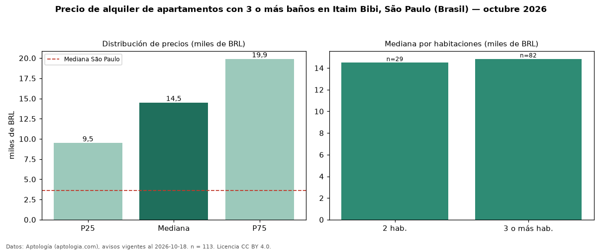

Precio de alquiler de apartamentos con 3 o más baños en Itaim Bibi, São Paulo (Brasil) — octubre 2026
BRL 14.500 al mes es el canon mediano de apartamentos con 3 o más baños en alquiler en Itaim Bibi, São Paulo (Brasil) (n = 113 avisos). Eso es 57 % más que la mediana de todos los apartamentos en alquiler de Itaim Bibi (BRL 9.250, n = 304); este segmento reúne el 37 % de esos avisos. Por metro cuadrado, la mediana es BRL 82,78/m² al mes (n = 106), 9 % por debajo del conjunto de referencia (BRL 91,33/m²). El área mediana anunciada es 134 m². El segmento con más oferta es el de 3 o más habitaciones (82 avisos, mediana BRL 14.840); pasar de 2 habitaciones a 3 o más habitaciones cambia la mediana +2 %. La cuota de mantenimiento o condominio mediana declarada es BRL 3.005 al mes (n = 113), aparte del canon. La mitad central de los avisos va de BRL 9.500 a BRL 19.900 (razón 2,1), una dispersión alta. La mediana de todos los apartamentos en alquiler de São Paulo es BRL 3.621 (+300 % de diferencia). Datos: Aptología (aptologia.com), CC BY 4.0 — https://www.aptologia.com/br/aluguel/sao-paulo/itaim-bibi. Archivos: PDF, CSV con las cifras y gráfica PNG.

| Avisos únicos | 113 |
|---|---|
| Percentil 25 | COP 9.500 |
| Mediana | COP 14.500 |
| Percentil 75 | COP 19.900 |
| Mediana por m² | COP 82 |
Fuente: avisos vigentes de portales inmobiliarios recopilados por Aptología, deduplicados (mínimo 30 avisos únicos por celda). Precios pedidos, no cerrados. Fecha: 2026-10-18.